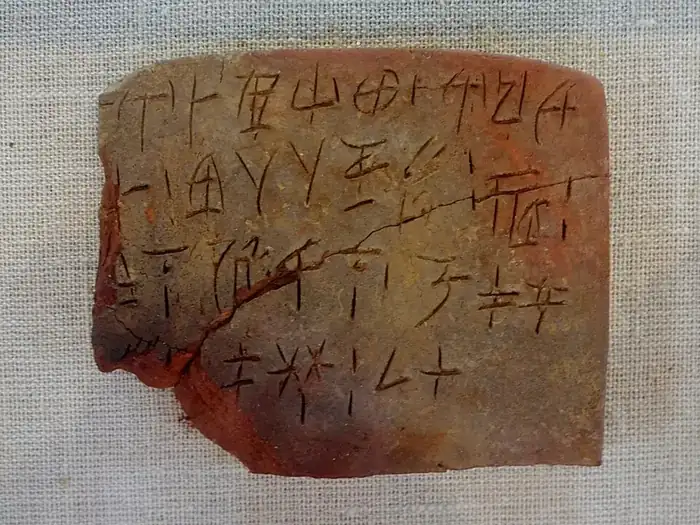

The script
Linear A was used on Crete and the Aegean from roughly 1800 to 1450 BC, mostly on clay tablets, along with sealings and stone vessels. About 1,400 inscriptions survive, most of them short accounting records, and the signs are catalogued in a standard syllabary.
Maps, diagrams and images


The problem
Linear B was deciphered by Michael Ventris in 1952 partly because he guessed — correctly — that the language was Greek. For Linear A, the underlying language is unknown, the corpus is small and repetitive, and there is no bilingual text. The signs can be read phonetically in part, but the words do not resolve into a known language.
Proposed identifications include a Minoan language unrelated to Greek, a Luwian-related Anatolian language, and others; none is established.
Documented: the corpus, the signs and the find contexts.
Documented: the accounting character of most texts.
Not established: the language.
Not deciphered: the script.
The label: documented — a real script and a real open problem.
Why it is in the archive
Because it is the honest version of the 'undeciphered script' claim: no aliens, no Atlanteans, just a small corpus and no bilingual.
Open resources on this topic
- BookLinear A (Internet Archive, free to read)
- BookAegean writing and linear A — Pope, Maurice · 1964 (Internet Archive, free to read)
- BookLINEAR A Complete Compact APD Bias Solution for a 10Gbits/s GPON System Design Note 447 Xin Qi (Internet Archive, free to read)
- PapersOpen-access articles: DOAJ · PubMed Central · Internet Archive Scholar
- BooksPublic-domain and borrowable copies: Open Library · Project Gutenberg · Google Books
More images
Cite this page
Momin, S. (2026). Linear A. The Larger World Archive. https://drsamonline.github.io/LARGE_GLOBE/linear-a.htmlMomin, Sohil. “Linear A.” The Larger World Archive, 2026, https://drsamonline.github.io/LARGE_GLOBE/linear-a.html.Momin, Sohil. “Linear A.” The Larger World Archive, 2026. https://drsamonline.github.io/LARGE_GLOBE/linear-a.html.@misc{linear2026linear,
author = {Momin, Sohil},
title = {Linear A},
year = {2026},
howpublished = {The Larger World Archive},
url = {https://drsamonline.github.io/LARGE_GLOBE/linear-a.html},
note = {Last reviewed 20 November 2026}
}Last reviewed 20 November 2026 · Corrections policy · this page is not peer reviewed
Sources for this page
- Wikipedia, “Linear A” — the script and the attemptsen.wikipedia.org
- Wikipedia, “Linear B” — the one that was crackeden.wikipedia.org
- Wikipedia, “Minoan language” — the unknownen.wikipedia.org
- Wikipedia, “Undeciphered writing systems” — the company it keepsen.wikipedia.org